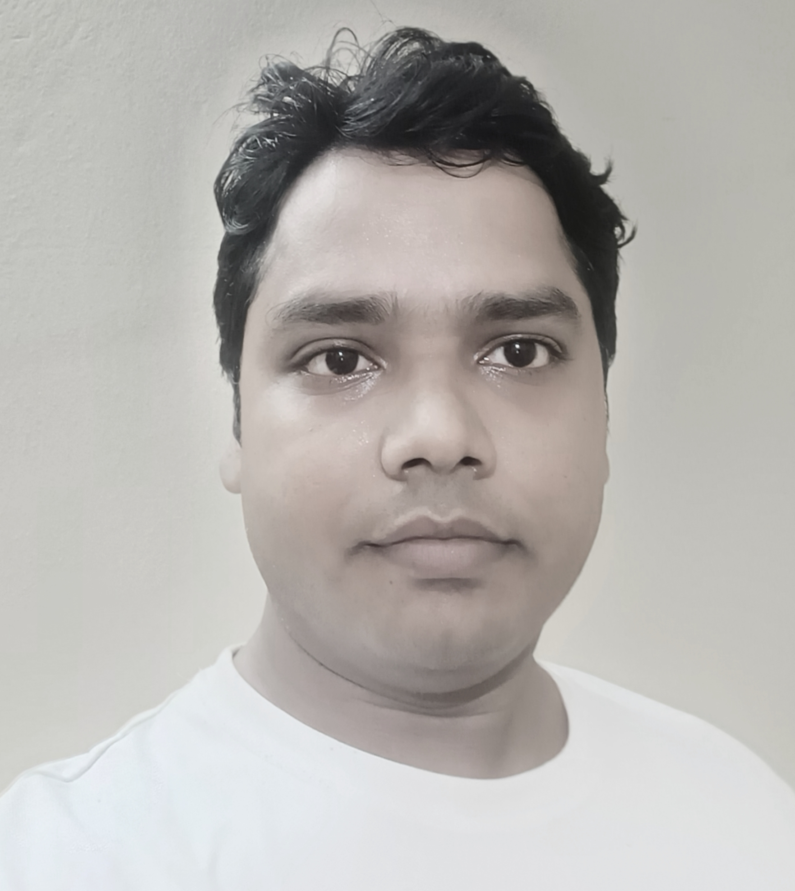

Ajit Kumar Sahoo
Research fellow |

|


About Me
I am a PhD student at School of Computer and Information Sciences (SCIS), University of Hyderabad (UoH). I am working under the supervision of Professor Siba Kumar Udgata, SCIS, UoH.
Research
My research area includes Intelligent Sensing and Device Free Sensing.
Intelligent Sensing: The Impact of AI on Sensor Capabilities
With the rapid development of artificial intelligence (AI), cognitive technology, big data and other emerging technologies has greatly promoted the development of intelligent sensing system. Intelligent sensing is the ability to extract insights from sensor data using artificial intelligence and machine learning techniques. Intelligent sensing is all about the sensors use artificial intelligence technique that can draw information from the surroundings on their own, much like human sense organs. AI enabled sensors are used to great advantage in applications developed for automatic knowledge acquisition, fuzzy logic, neural networks, case-based reasoning, genetic algorithms, ambient intelligence and much more.
Device Free Sensing: Use of Existing Wi-Fi Signals to Detect Events
Device-free wireless sensing (DFWS) is an emerging technique that could estimate the presence, location, motion, activity, and gestures of a person without equipping him/her with any device. The DFWS technique leverages shadowing, diffraction, reflection, and scattering phenomena exerted by a person on wireless links to estimate the human state. Advantage of DFWS based applications is ubiquity of wireless signals, i.e. the presence of ambient WiFi signals in homes and offices. Device-based sensing for localizing registered targets with communication capabilities, and device-free sensing for localizing unregistered targets that cannot transmit/receive communication signals.
Experience
Worked as a Senior Research Fellow (SRF) in a DBT funded project in the area of molecular biology and bioinformatics at Tezpur central university, Assam, India., under Dr. Siddhartha Shankar Satapathy, Associate Professor, Department of Computer Science and Engineering, Tezpur University. My work was to analyze and investigate the Codon Usage Bias (CUB) in bacterial genes sequences using C and Python programming and developed online data processing tools .
- June 2015 - August 2016, Lecturer, Department of ITM, Ravenshaw University, Cuttack, Odisha, India.
- June 2013 - January 2015, SRF, Tezpur central university, Tezpur, Assam, India.
Education
- Ph.D. (Computer Science), 2022, University of Hyderabad, Hyderabad, India.
- M.Tech. (Information Technology), 2013, Tezpur Central University, Tezpur, Assam, India.
- Master of Computer Application, 2010, P.G. Dept. of Computer Science, Berhampur University, Berhampur, Odisha, India.
- B.Sc. (Mathematics), 2007, N. C. College, Utkal University, Odisha, India.
Awards and Honors
- UGC-NET-JRF, DECEMBER 2014
- UGC-NET, JUNE 2014
- GATE Fellowship (2011-2013)
Research Publications
For publication details please visit the Link